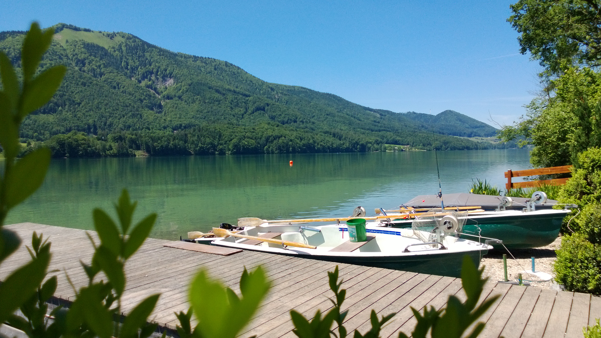
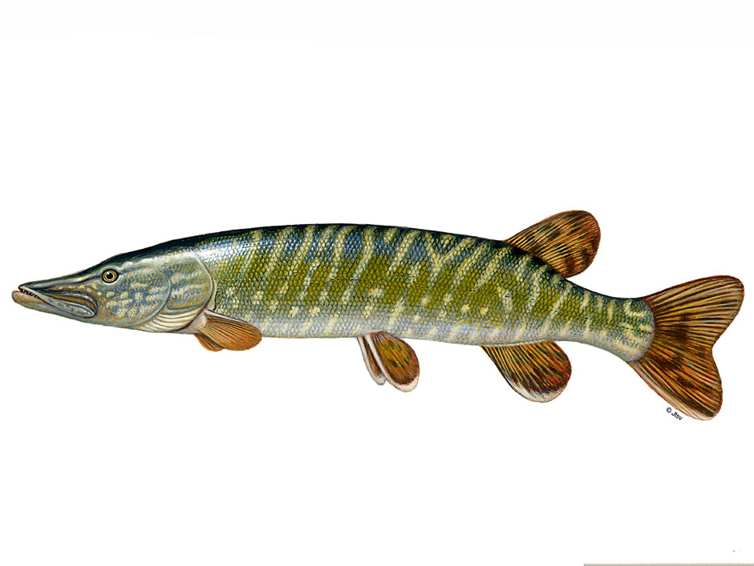
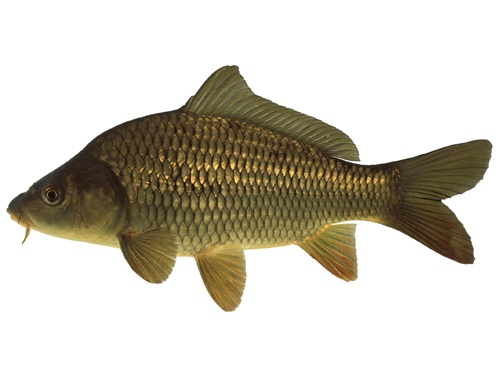

Tag am Wasser Planen

Plane deinen Angelausflug mit uns. Wähle deinen Zielfisch und benütze unsere Checkliste damit Du am Wasser auch alles füt deinen Zielfisch dabei hast
Hecht Angeln
Die wichtigsten Merkmale des Hechts:
➥ Der Hecht hat einen lang gestreckten Körper, der im Querschnitt fast rund (walzenförmig) ist sein Bauch ist etwas abgeplattet
➥ Der Kopf des Hechts ist sehr lang, seine Schnauze schnabelartig ausgezogen mit wenigen großen Zähnen im Unterkiefer und zahlreichen, nach hinten gekrümmten und umklappbaren Fangzähnen im Gaumendach
➥ Das Maul des Hechts ist oberständig, der Unterkiefer steht hervor
➥ Die Färbung des Hechts ist dunkelbraun bis grün mit unregelmäßigen, teilweise in Flecken aufgelösten gelblichen Querbinden.
➥ Die Färbung des Hechts wird in Richtung Bauch stetig heller. Abhängig von seinem Lebensraum kann seine Färbung variieren

Karpfen Angeln
Die wichtigsten Merkmale des Karpfens:
➥ hochrückige, gedrungene und füllige Körperform, Buckel nach dem Kopf
➥ um das Maul stehen vier fleischige Bartfäden (2 lange, 2 kürzere), von denen die 2 größeren etwa am Mundwinkel, die zwei kleineren über der Oberlippe sitzen
➥ der Bauchflossenansatz ist hinter der Rückenflosse
➥ die große Schwanzflosse ist tief gegabelt und abgerundet
➥ er hat paarige Flossen und seine Schwanzflosse ist gewöhnlich rötlich